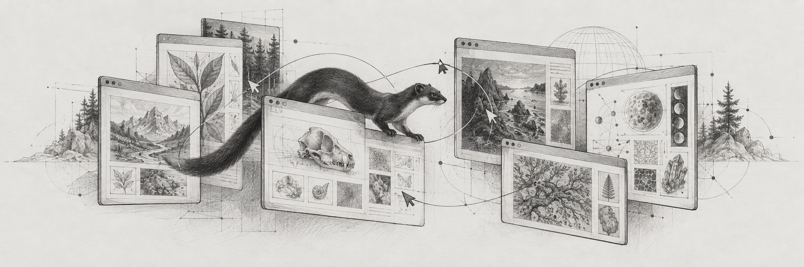
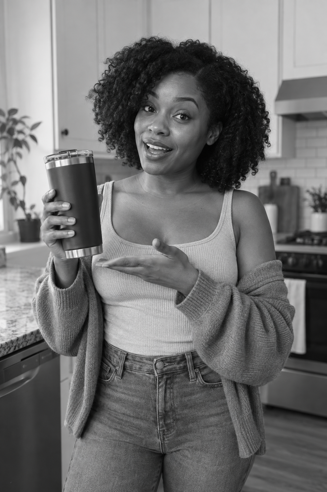

Seymur Mammadov
then a little hello.↙
01 / the first app · a work in progress
Weaszel.
A curious little scout.
A bridge between websites and agents.

Follow the little scout.
Point Weaszel at a page. It observes the page, accessibility tree, and forms; builds callable tools; and generates a Swagger reference. An agent can use those tools through the local adapter.
Explore the YouTube Swagger ↗Local adapter prototype. Live calls run on your computer.
02 / building a business
PumpAds.
2xROAS, Inc.
Co-founder · product & engineering
November 2024 — August 2025
I co-founded 2xROAS, Inc., the company behind PumpAds. With my partners, I helped turn a complex AI workflow into a product that creates creator-style video ads for paying customers.

Illustrative AI creator concepts · not customer campaigns
Product brief → script → voice and visuals → lip sync → finished ad.
More than a model call.
With an eight-person team, we built a multimodal pipeline connecting script generation, voice cloning, image and video generation, lip sync, revoicing, and final FFmpeg assembly.
My experience spanned the product, backend, AI workflows, and the infrastructure needed to bring them together.
Make it work as a business.
We moved long-running jobs into independently scalable services, with queues and persistent job state. That kept n8n as a fast orchestration layer and supported bursts of 100 concurrent requests.
We also built a usage-credit ledger with reservations, reconciliation, and automatic refunds for failed generations, and secured $50K in platform credits to help manage early costs.
2xROAS, Inc. · Product: PumpAds · multimodal AI · distributed jobs · n8n · FFmpeg · Replicate & Cog
03 / a home for good ideas
SwipeBuilder.
Co-founder · Lead Backend & AI Engineer
December 2023 — August 2025
I co-founded SwipeBuilder to turn scattered ad inspiration into a searchable creative workspace. I led backend and AI engineering, from ingestion and semantic search to scripts grounded in the right references.
Keep what catches your eye.
Collect ad references from platforms such as Meta, TikTok, and Google.
Give your ideas a home.
Organize references into folders and share creative boards with your team.
Find the useful thread.
Explore saved ads and video transcripts to understand the ideas behind the creative.
Make the next story yours.
Use AI copywriting to adapt a reference to a different product or offer.
Find the thread between ideas.
I built natural-language and hybrid semantic search across 100K+ transcribed ads, combining embeddings, vector retrieval, metadata filters, personalized signals, and diverse results.
A production RAG pipeline brought relevant transcripts together with the customer's product, offer, and audience to generate scripts grounded in useful creative examples.
Keep the creative work moving.
I built the backend for a five-person company: core APIs, billing, collaboration, recommendations, and asynchronous jobs. Crawlers and Chrome-extension imports fed the ingestion and transcription pipeline.
Lambda, SQS, SNS, and persistent job state handled long-running work, with retries, dead-letter queues, and status tracking. Daily budgets and query caching kept repeated research faster and costs under control.
04 / opportunities in motion
JobTarget.
Tech Lead · May 2022 — September 2025
Software Engineer · January 2020 — May 2022
At JobTarget, I grew from Software Engineer to Tech Lead, building full-stack products and taking ownership from planning through delivery. The system story below follows jobs from applicant tracking systems to the job boards where they can reach the right audience.
Every opportunity starts somewhere.
Pull job listings from applicant tracking systems into the distribution workflow.
Different systems. A common language.
Prepare consistent job records with role, location, and source information.
Find the right place for each role.
Match each job to relevant boards using its context and destination requirements.
One opening. The right audience.
Distribute each job to its selected destinations and track delivery.
Own the product, end to end.
I led the development and optimization of compliance products, collaborating with stakeholders on priorities and serving as the primary technical contact for partners.
My work included the Local Outreach application, Compliance-Post / Reporting Hub, and the Compliance CIW Workbook with Salesforce integrations.
Build the foundation. Grow the team.
I architected AWS infrastructure migrations using DynamoDB, Lambda, and EC2, alongside the full-stack features that supported customers’ day-to-day work.
As Tech Lead, I mentored junior engineers in engineering practices and agile workflows, helping the team carry work from technical decisions through delivery.